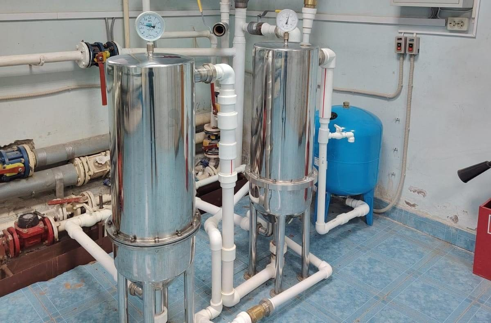
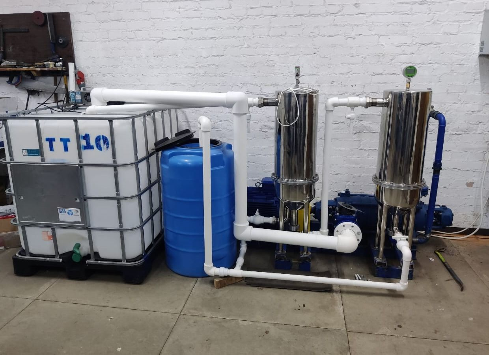
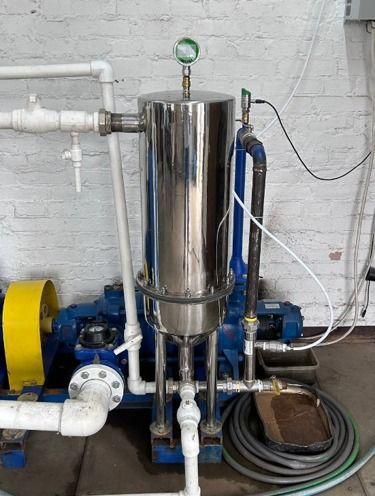

Экофильтр · вода
Водоподготовка с анализом воды до и после обработки
Модульная установка обрабатывает воду прямо на объекте: окисление озоном и самоочищающаяся микрофильтрация. Результат оценивают по анализам воды до и после обработки.

Кратко об установке
скважина, площадка ЭКОТЕХ (п. ИФА РАН) · протоколы Пц-3012-1/26 и Пц-3012-2/26; «Аналитический центр качества воды», аттестат ААЦ «Аналитика» № AAC.A.00109 · 18.06.2026
Назначение
Обработка подземной и поверхностной воды перед основной водоподготовкой или перед подачей потребителю.
Что обрабатывается
Подземная и поверхностная вода: железо, марганец, мутность, цветность. На стенде проверена и очистка хоз-бытовых стоков. Результат подтверждается анализом конкретной воды.
Особенности решения
Окислитель — озон, его вырабатывают на месте. Постоянное дозирование хлорсодержащих реагентов и коагулянтов в базовой схеме не требуется. Фильтрующий элемент очищается во время работы; промывочная вода учитывается.
Фотографии стенда


Что измеряется
Измерения на входе и выходе
Установка ведёт журнал работы; качество воды подтверждает аккредитованная лаборатория.
На входе
Давление; отбор проб исходной воды.
На выходе
Расход; отбор проб очищенной воды.
Промывка и журнал
Учёт промывочной воды; журнал работы и измерений.
Состав датчиков, частоту записи и удалённый доступ определяем для каждого объекта отдельно.
Исходные данные
Какие данные нужны для подбора решения
| Что нужно | Зачем |
|---|---|
| Анализ исходной воды | Показывает, какие показатели и до какого уровня нужно снизить. |
| Расход и режим потребления | Определяет число модулей и резерв. |
| Требования к очищенной воде | Становятся критерием приёмки испытаний. |
| Место установки и электропитание | Условия монтажа и энергопотребление. |
| Отвод промывочной воды | Промывочная вода учитывается отдельно. |
Где применяется
Скважины
Посёлки, заправочные станции, сельскохозяйственные объекты.
Перед обратным осмосом
Снижает нагрузку на мембраны. Экофильтр не опресняет: обессоливание выполняет обратный осмос.
Промышленность
По технологической схеме: обводная линия, дренаж, отбор проб, аварийный останов.
Результаты анализов
Вода до и после Экофильтра — по протоколам лабораторий
Разовые пробы, отобранные ЭКОТЕХ на площадке в п. ИФА РАН. Анализы выполнены лабораториями; результат относится к представленному образцу.
Вода из скважины, 2026
| Показатель | Значение | Единица | Объект | Дата | Источник | Статус |
|---|---|---|---|---|---|---|
| Железо общее: до → послеНорматив СанПиН 1.2.3685-21 — не более 0,3. Разовая проба; отбор выполнил ЭКОТЕХ. Результат относится к представленному образцу; стабильность подтверждается серией проб. | 0,92 → 0,05 | мг/дм³ | скважина, площадка ЭКОТЕХ (п. ИФА РАН) | 18.06.2026 | протоколы Пц-3012-1/26 и Пц-3012-2/26; «Аналитический центр качества воды», аттестат ААЦ «Аналитика» № AAC.A.00109 | ИЗМЕРЕНО |
| Мутность: до → послеНорматив — не более 2,6. До очистки проба нормативам не соответствовала, после — соответствует. | 9,7 → < 1,0 | ЕМФ | скважина, площадка ЭКОТЕХ (п. ИФА РАН) | 18.06.2026 | протоколы Пц-3012-1/26 и Пц-3012-2/26 | ИЗМЕРЕНО |
| Цветность: до → послеНорматив — не более 20. | 12 → 3 | град. | скважина, площадка ЭКОТЕХ (п. ИФА РАН) | 18.06.2026 | протоколы Пц-3012-1/26 и Пц-3012-2/26 | ИЗМЕРЕНО |
| Удельная электропроводность: до → послеСоли практически не меняются: Экофильтр не опресняет. Жёсткость 4,9 → 5,0 °Ж. | 480 → 475 | мкСм/см | скважина, площадка ЭКОТЕХ (п. ИФА РАН) | 18.06.2026 | протоколы Пц-3012-1/26 и Пц-3012-2/26 | ИЗМЕРЕНО |
Поверхностная вода, 2025
| Показатель | Значение | Единица | Объект | Дата | Источник | Статус |
|---|---|---|---|---|---|---|
| Железо общее: до → послеНорматив — не более 0,3. Мутность 90 → 2,5 ЕМФ, марганец 0,110 → 0,052 мг/дм³. Разовая проба; отбор выполнил ЭКОТЕХ. Результат относится к представленному образцу; стабильность подтверждается серией проб. | 6,0 → 0,26 | мг/дм³ | поверхностная вода, стенд ЭКОТЕХ (п. ИФА РАН) | 11.06.2025 | протоколы Пц-3372-1/25 и Пц-3372-2/25; «Аналитический центр качества воды», аттестат ААЦ «Аналитика» № AAC.A.00109 | ИЗМЕРЕНО |
Хоз-бытовые стоки, 2025
| Показатель | Значение | Единица | Объект | Дата | Источник | Статус |
|---|---|---|---|---|---|---|
| БПК₅: до → послеХПК 169 → 6,2 мгО/дм³; взвешенные вещества 52 → 4,0 мг/дм³. Нормативы протокола — для сброса в централизованную канализацию (ПП РФ № 644); для сброса в водный объект нормативы строже. Разовая проба; отбор выполнил ЭКОТЕХ. Результат относится к представленному образцу; стабильность подтверждается серией проб. | 74 → 2,8 | мг/дм³ | хоз-бытовые стоки, стенд ЭКОТЕХ (п. ИФА РАН) | 27.08.2025 | протоколы № 5094 и № 5095; ООО «Лаб24», аккредитация RA.RU.21AH50 | ИЗМЕРЕНО |
| Фосфор общий: до → послеАзот общий: более 100 → 21,2 мг/дм³; нефтепродукты 7,6 → 0,20 мг/дм³. | 24,4 → 0,85 | мг/дм³ | хоз-бытовые стоки, стенд ЭКОТЕХ (п. ИФА РАН) | 27.08.2025 | протоколы № 5094 и № 5095 | ИЗМЕРЕНО |
| Никель: до → послеКонцентрация выросла (норматив ПП № 644 — 0,25). Причина не установлена; нужна повторная проба с контролем металлов. | 0,015 → 0,040 | мг/дм³ | хоз-бытовые стоки, стенд ЭКОТЕХ (п. ИФА РАН) | 27.08.2025 | протоколы № 5094 и № 5095 | ИЗМЕРЕНО |
Что предстоит подтвердить
| Показатель | Значение | Единица | Объект | Дата | Источник | Статус |
|---|---|---|---|---|---|---|
| Непрерывная работа при испытаниях | 8–12 | недель | действующий объект водоподготовки | 09.2026 | программа испытаний ЭКОТЕХ | ЦЕЛЕВОЕ |
| Производительность модуляИсточники расходятся; значение публикуется после сверки паспорта и показаний расходомера. | —значение уточняется: источники расходятся, публикуется после сверки | м³/ч | Экофильтр | 09.2026 | реестр расхождений | ТРЕБУЕТ ПРОВЕРКИ |
| Удельная энергия на кубометрПубликуется после измерения на согласованных границах учёта. | —значение уточняется: источники расходятся, публикуется после сверки | кВт·ч/м³ | Экофильтр | 09.2026 | реестр расхождений | ТРЕБУЕТ ПРОВЕРКИ |
| Тонкость микрофильтрации | — | мкм | Экофильтр | 09.2026 | подтверждается по фильтрующему элементу | ТРЕБУЕТ ПРОВЕРКИ |
Документы
- Технические условия
- ТУ 28.29.12-001-70473237-2025
- Декларация о соответствии
- № ЕАЭС N RU Д-RU.РА06.В.32770/25, ТР ТС 010/2011
- Срок действия
- 25.07.2025 — 23.07.2030
- Что подтверждает
- Безопасность оборудования, а не качество очистки воды. «Серийный выпуск» — схема декларирования; само решение проходит испытания на объекте.
Границы применения
- результат зависит от состава исходной воды и подтверждается для каждой воды отдельно
- установка не опресняет: электропроводность и жёсткость после очистки почти не меняются; обессоливание выполняет обратный осмос
- очищенные стоки не заявляются как пригодные для сброса в водный объект — там действуют более строгие нормативы
- рост никеля в пробе стоков требует повторной проверки
Готовность
Испытания на действующем объекте
- 01Концепция
- 02Исследования и разработка
- 03Опытный образец
- 04Испытания
- 05Испытания на объекте
сейчас - 06Подтверждение в промышленных условиях
- 07Внедрение
- 08Расширение применения
- Стадия
- Испытания на объекте
- На чём основана
- Установка на действующем объекте водоподготовки; лабораторные протоколы до и после обработки по пробам со стенда и скважины на площадке ЭКОТЕХ (2025–2026)
- Дата
- 06.2026
- Следующий этап
- Непрерывная работа 8–12 недель с серией проб, в том числе на объекте заказчика; отбор проб — лабораторией
Пришлите анализ исходной воды
И требования к очищенной воде — по ним подберём состав установки для испытаний.